J remains the primary candidate. S adds diffuse-intensity measurement and dark-saddle separation. Review the gains and the clear-material failure before choosing. No production inventory changed.
Scientific report · Requirements · Why dark stopping weakened · Reproduce · Full measurements
Start with e01–e05, e07 and unseen v04. Cyan/blue S versus green J; white + means measured photographic centroid. Native masks, original A and failed D/G alternatives are expandable. An old mask is not truth. The user permits disregarding edge/shadow areas; those controls are retained separately below.
Lower yellow: J removes the lower-left lobe. D crosses the dark saddle into the adjacent yellow. S separates those regions while preserving more diffuse material; no thickness pruning. The remaining rim is a photographic proposal, not a full body.
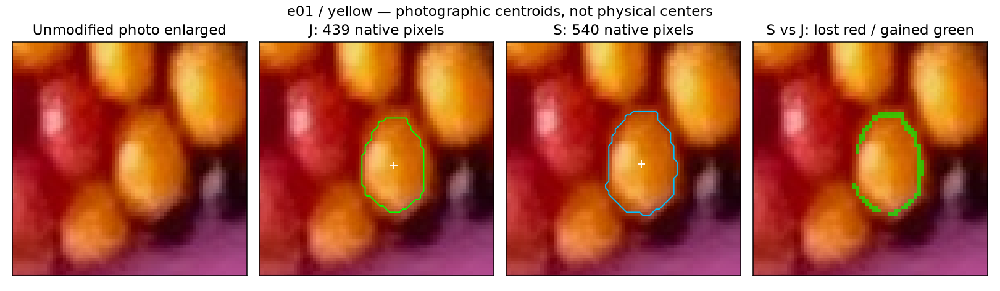
bottom-cyan-spike; user evidence, not inference prior
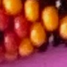
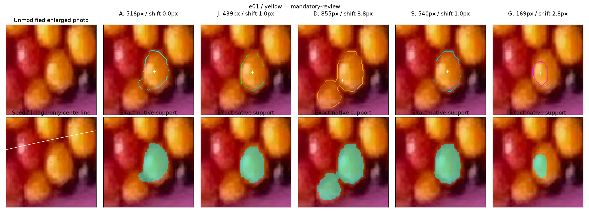
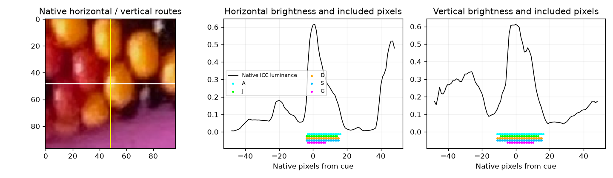
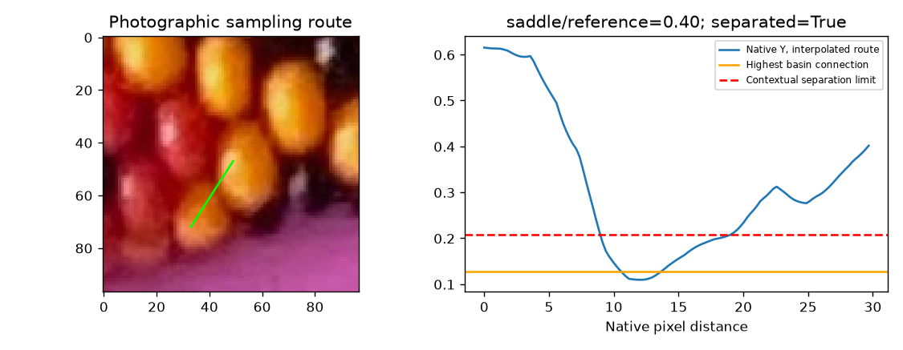
| Method | Area px | Change vs A | Centroid shift px | Boundary gradient | Support / line | 32/48 IoU |
|---|---|---|---|---|---|---|
| A | 516 | −0 / +0 | 0.00 | 0.0466 | positive; near=True | old fixed domain |
| J | 439 | −100 / +23 | 0.96 | 0.0549 | positive; near=True | old fixed domain |
| D | 855 | −18 / +357 | 8.81 | 0.0441 | positive; near=True | 1.0 |
| S | 540 | −36 / +60 | 0.97 | 0.0483 | positive; near=True | 1.0 |
| G | 169 | −347 / +0 | 2.79 | 0.0800 | positive; near=False | 0.9941176470588236 |
Left red crossing the centerline: J keeps only 200px around the highlight. S restores the diffuse red to 495px and retains measured crossing. Its lower edge follows darker red material; exact physical extent remains unknown.
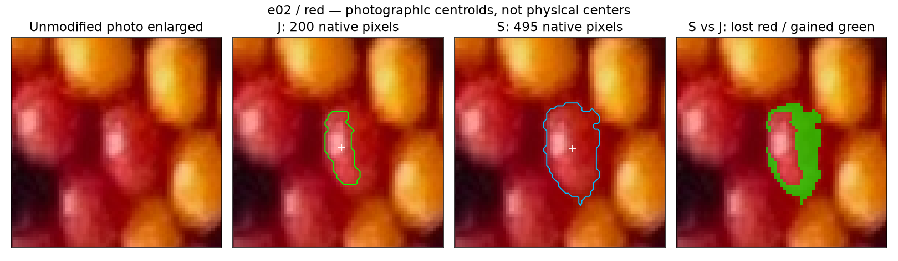
left-red-crossing; user evidence, not inference prior
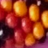
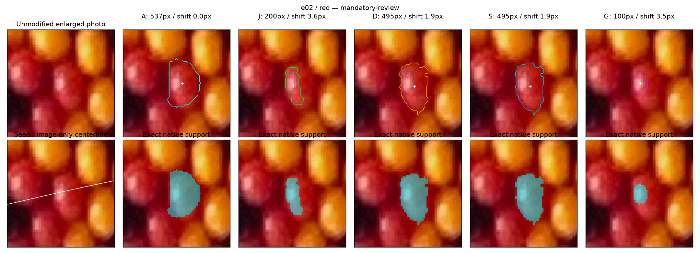
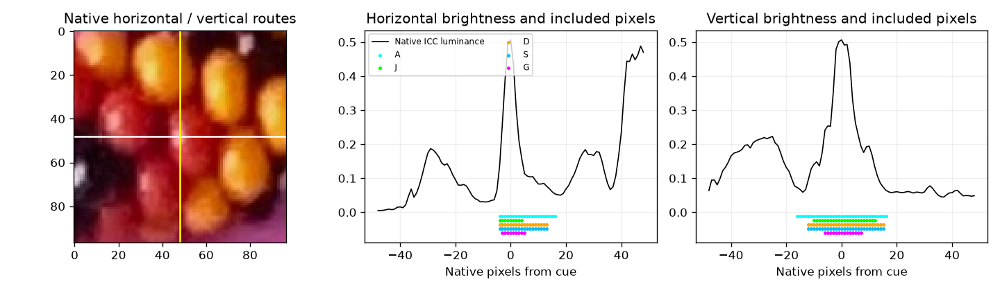
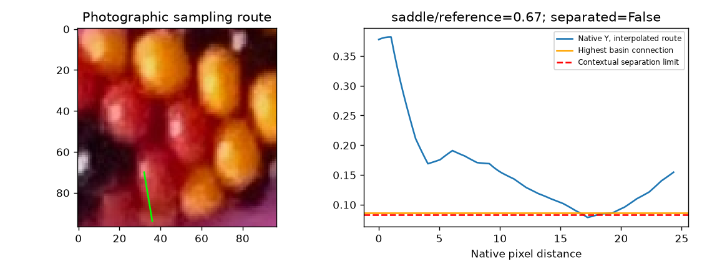
| Method | Area px | Change vs A | Centroid shift px | Boundary gradient | Support / line | 32/48 IoU |
|---|---|---|---|---|---|---|
| A | 537 | −0 / +0 | 0.00 | 0.0213 | crossing; near=True | old fixed domain |
| J | 200 | −337 / +0 | 3.64 | 0.0370 | crossing; near=True | old fixed domain |
| D | 495 | −100 / +58 | 1.90 | 0.0228 | crossing; near=True | 1.0 |
| S | 495 | −100 / +58 | 1.90 | 0.0228 | crossing; near=True | 1.0 |
| G | 100 | −437 / +0 | 3.53 | 0.0542 | crossing; near=True | 0.98 |
Right yellow: J is already plausible. S adds a darker photographic rim with little centroid movement; extra area alone is not improvement. All three two-sided observations remain separately represented.
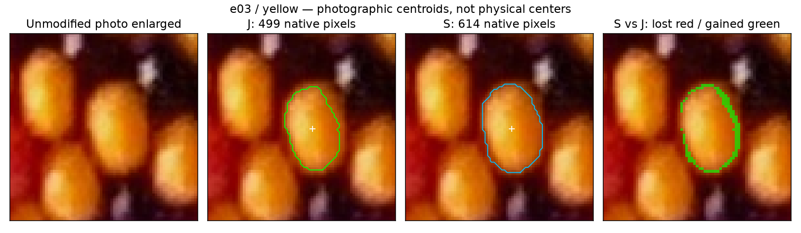
right-yellow; user evidence, not inference prior
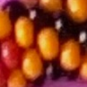
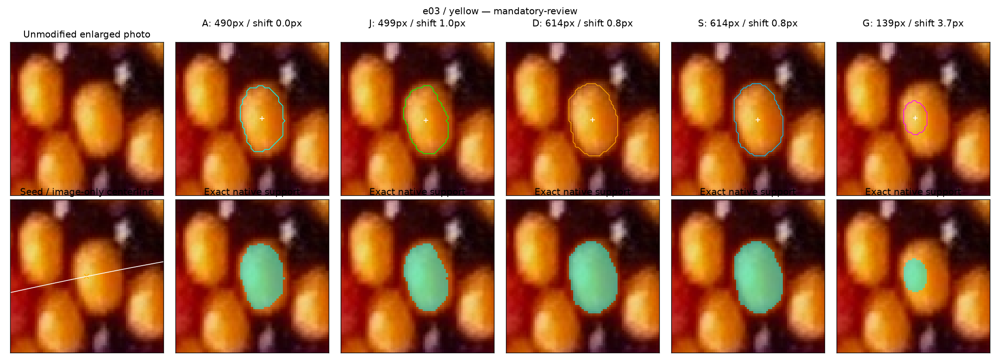
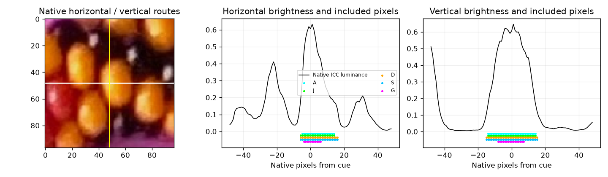
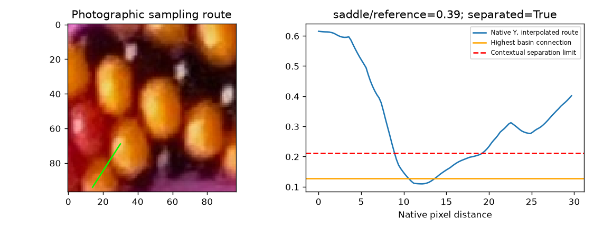
| Method | Area px | Change vs A | Centroid shift px | Boundary gradient | Support / line | 32/48 IoU |
|---|---|---|---|---|---|---|
| A | 490 | −0 / +0 | 0.00 | 0.0676 | crossing; near=True | old fixed domain |
| J | 499 | −29 / +38 | 1.04 | 0.0659 | crossing; near=True | old fixed domain |
| D | 614 | −0 / +124 | 0.81 | 0.0581 | crossing; near=True | 1.0 |
| S | 614 | −0 / +124 | 0.81 | 0.0581 | crossing; near=True | 1.0 |
| G | 139 | −351 / +0 | 3.73 | 0.0608 | crossing; near=True | 1.0 |
User-approved yellow brightness-profile case: J remains the reference. S gives a similar intensity-shaped region with a modest additional rim. D joins the neighboring yellow; G truncates to the bright center.
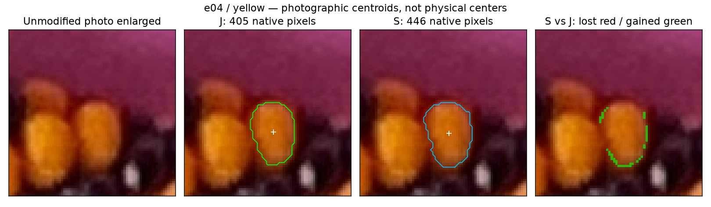
bad-magenta; user evidence, not inference prior
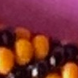
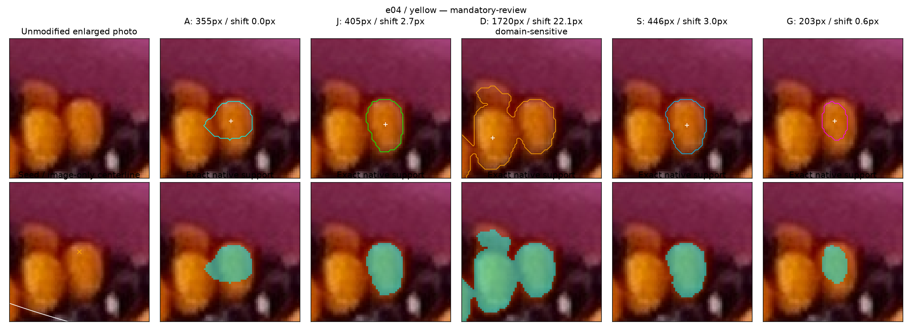
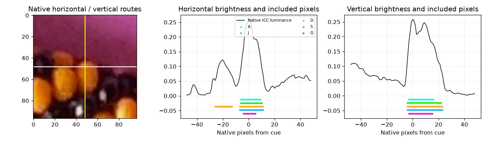
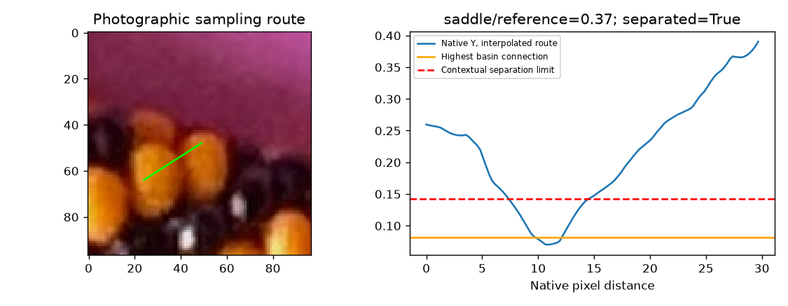
| Method | Area px | Change vs A | Centroid shift px | Boundary gradient | Support / line | 32/48 IoU |
|---|---|---|---|---|---|---|
| A | 355 | −0 / +0 | 0.00 | 0.0302 | positive; near=False | old fixed domain |
| J | 405 | −52 / +102 | 2.65 | 0.0347 | positive; near=False | old fixed domain |
| D | 1720 | −0 / +1365 | 22.07 | 0.0360 | crossing; near=True | 0.7122093023255814 |
| S | 446 | −50 / +141 | 2.96 | 0.0338 | positive; near=False | 1.0 |
| G | 203 | −155 / +3 | 0.57 | 0.0278 | positive; near=False | 0.9759615384615384 |
Strong red truncation flag: J loses diffuse material beyond a bright peak. S restores much of it and rejects A’s leftward neighboring lobe. S also retains a narrow dark lower extension; this is unresolved stopping evidence, not a reason to impose thickness pruning.
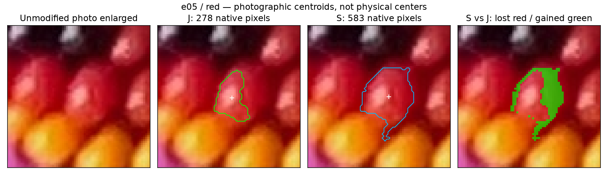
Maximum red-truncation diagnostic with ≥35px separation and at most3 per old crop; color=red; score=211.265; strong-source stratum=True. Difference is not established regression.
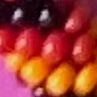
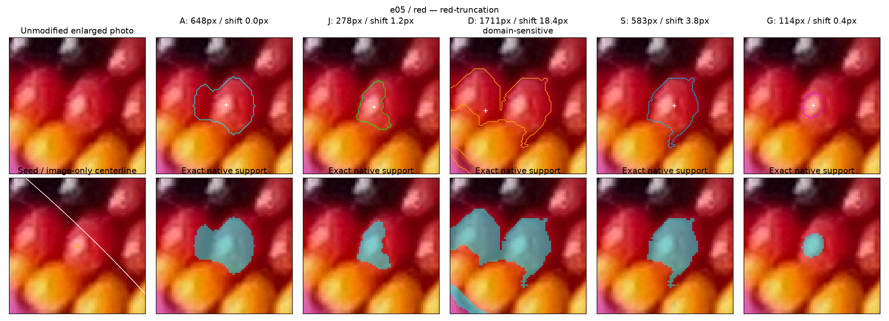
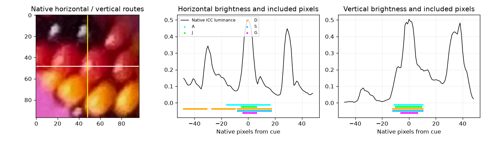
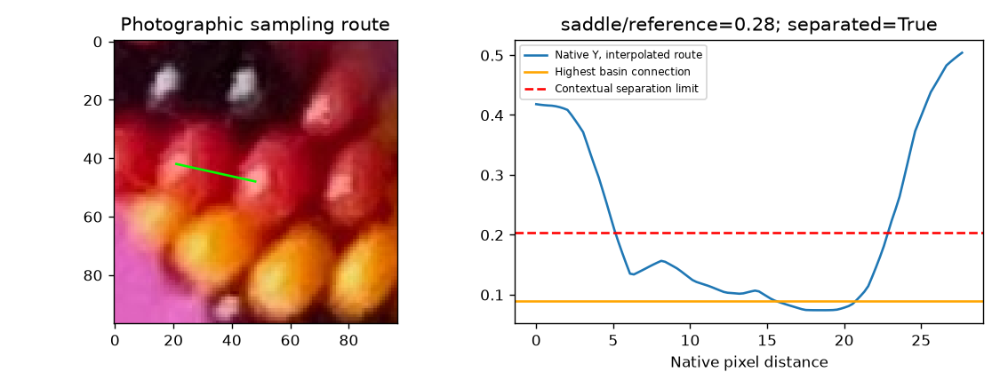
| Method | Area px | Change vs A | Centroid shift px | Boundary gradient | Support / line | 32/48 IoU |
|---|---|---|---|---|---|---|
| A | 648 | −0 / +0 | 0.00 | 0.0172 | crossing; near=True | old fixed domain |
| J | 278 | −370 / +0 | 1.18 | 0.0288 | crossing; near=True | old fixed domain |
| D | 1711 | −36 / +1099 | 18.36 | 0.0318 | crossing; near=True | 0.6294564582115721 |
| S | 583 | −136 / +71 | 3.79 | 0.0174 | crossing; near=True | 1.0 |
| G | 114 | −534 / +0 | 0.37 | 0.0498 | positive; near=True | 0.9912280701754386 |
Visible yellow pair at necklace edge: J crosses the dark connection and includes part of the upper bead. S separates the upper contribution while retaining the lower photographic interior. Edge location alone does not invalidate this clear seam example.
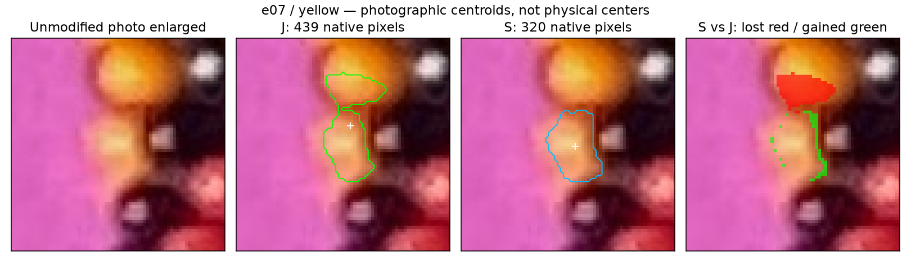
Maximum yellow-neighbor-connection diagnostic with ≥35px separation and at most3 per old crop; color=yellow; score=108; strong-source stratum=True. Difference is not established regression.
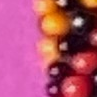
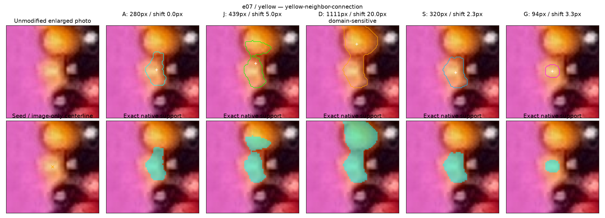
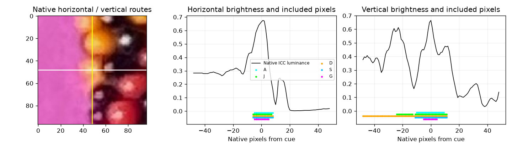
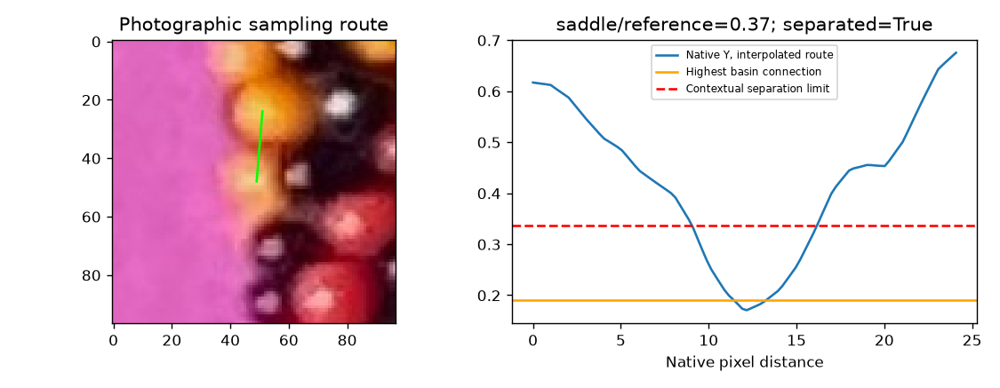
| Method | Area px | Change vs A | Centroid shift px | Boundary gradient | Support / line | 32/48 IoU |
|---|---|---|---|---|---|---|
| A | 280 | −0 / +0 | 0.00 | 0.0464 | positive; near=False | old fixed domain |
| J | 439 | −42 / +201 | 4.97 | 0.0461 | positive; near=False | old fixed domain |
| D | 1111 | −1 / +832 | 19.99 | 0.0514 | positive; near=False | 0.7011701170117012 |
| S | 320 | −33 / +73 | 2.30 | 0.0444 | positive; near=False | 1.0 |
| G | 94 | −189 / +3 | 3.25 | 0.0476 | positive; near=False | 1.0 |
The overlap flag is not automatically leakage: A extends toward a lower neighbor, while J better isolates the upper yellow. S expands its diffuse interior; old-mask agreement is not ground truth.
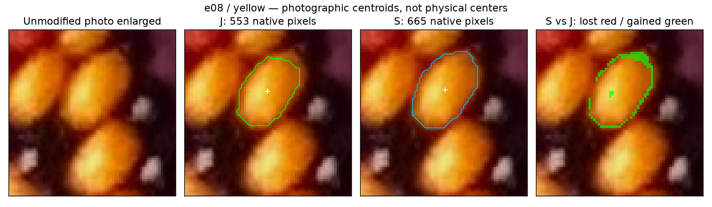
Maximum yellow-neighbor-connection diagnostic with ≥35px separation and at most3 per old crop; color=yellow; score=409; strong-source stratum=False. Difference is not established regression.
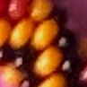
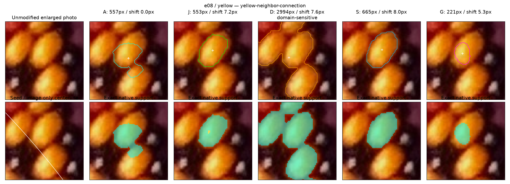
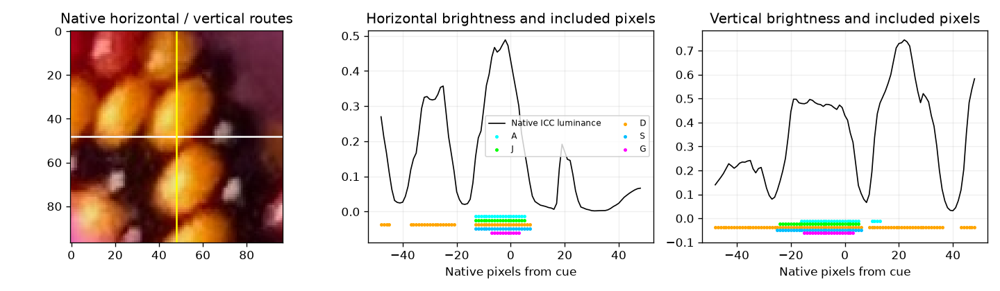
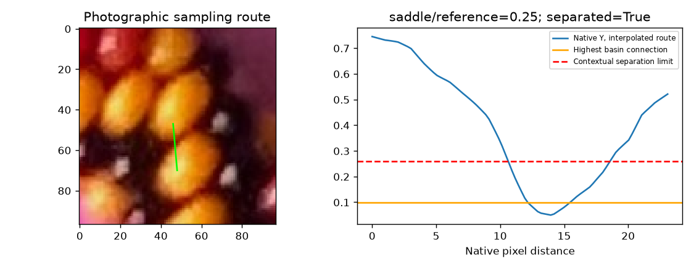
| Method | Area px | Change vs A | Centroid shift px | Boundary gradient | Support / line | 32/48 IoU |
|---|---|---|---|---|---|---|
| A | 557 | −0 / +0 | 0.00 | 0.0461 | crossing; near=True | old fixed domain |
| J | 553 | −166 / +162 | 7.23 | 0.0478 | crossing; near=True | old fixed domain |
| D | 2994 | −0 / +2437 | 7.55 | 0.0434 | crossing; near=True | 0.6590984974958264 |
| S | 665 | −132 / +240 | 8.00 | 0.0438 | crossing; near=True | 1.0 |
| G | 221 | −341 / +5 | 5.29 | 0.0671 | negative; near=True | 1.0 |
Lost-bright-material ranking selected a misleading old mask: A includes neighboring yellow. J removes much of that contribution. S adds diffuse material to the lower target. A’s lost pixels are not all legitimate target material.
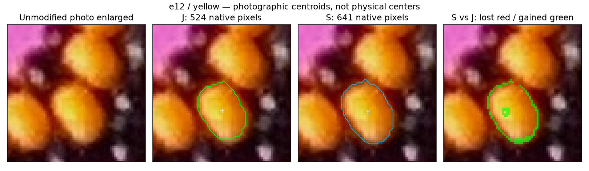
Maximum lost-bright-material diagnostic with ≥35px separation and at most3 per old crop; color=None; score=62.3921; strong-source stratum=False. Difference is not established regression.
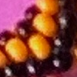
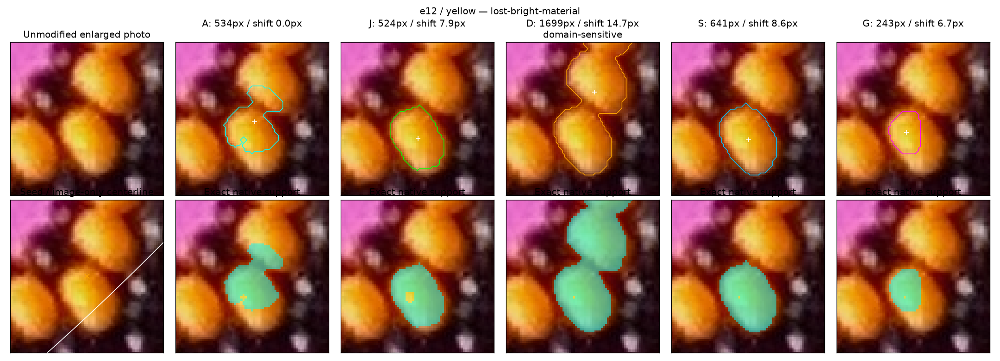
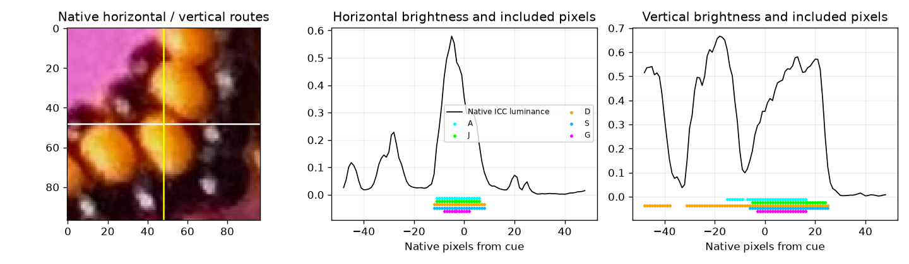
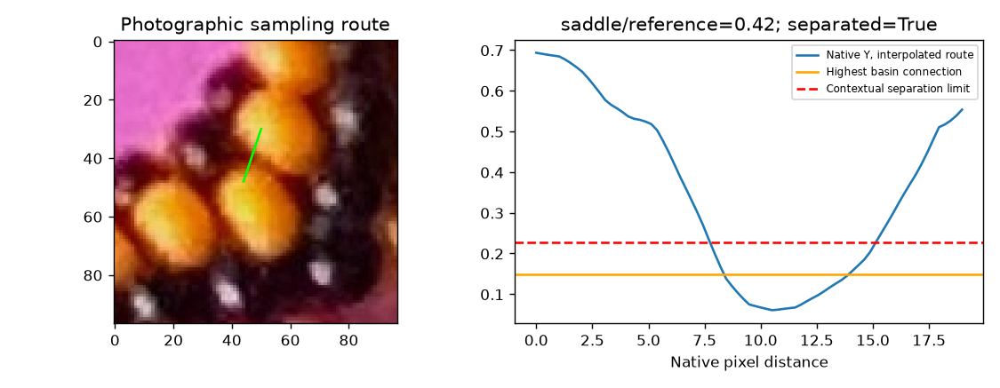
| Method | Area px | Change vs A | Centroid shift px | Boundary gradient | Support / line | 32/48 IoU |
|---|---|---|---|---|---|---|
| A | 534 | −0 / +0 | 0.00 | 0.0616 | crossing; near=True | old fixed domain |
| J | 524 | −174 / +164 | 7.95 | 0.0687 | crossing; near=True | old fixed domain |
| D | 1699 | −1 / +1166 | 14.72 | 0.0539 | crossing; near=True | 0.7717647058823529 |
| S | 641 | −147 / +254 | 8.55 | 0.0580 | crossing; near=True | 1.0 |
| G | 243 | −312 / +21 | 6.70 | 0.0684 | positive; near=True | 0.9959016393442623 |
J improvement candidate: adds photographed yellow material with a small shift. S adds a dimmer rim. Prefer the brightness evidence over compactness; added area is not automatically better.
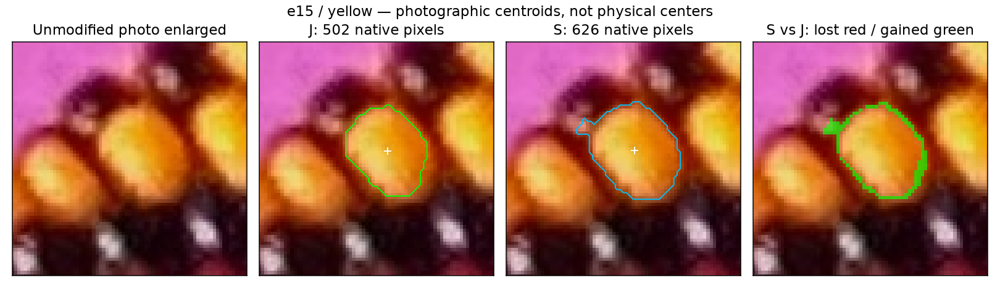
Maximum potential-improvement diagnostic with ≥35px separation and at most3 per old crop; color=None; score=0.138226; strong-source stratum=True. Difference is not established regression.
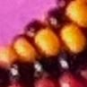
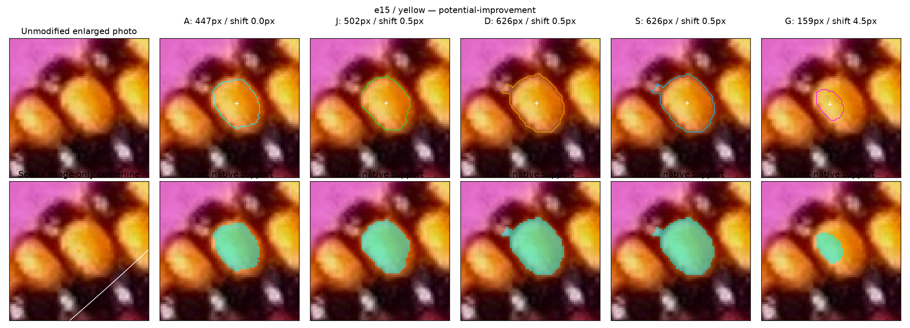
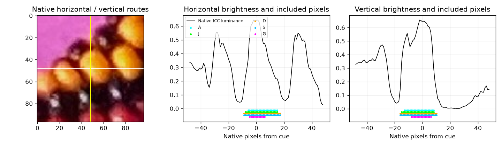
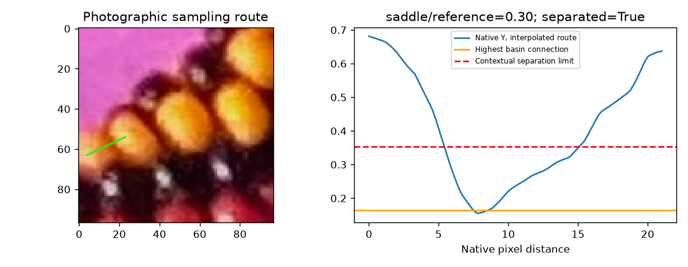
| Method | Area px | Change vs A | Centroid shift px | Boundary gradient | Support / line | 32/48 IoU |
|---|---|---|---|---|---|---|
| A | 447 | −0 / +0 | 0.00 | 0.0710 | positive; near=True | old fixed domain |
| J | 502 | −8 / +63 | 0.55 | 0.0884 | positive; near=True | old fixed domain |
| D | 626 | −0 / +179 | 0.51 | 0.0772 | positive; near=True | 1.0 |
| S | 626 | −0 / +179 | 0.51 | 0.0772 | positive; near=True | 1.0 |
| G | 159 | −288 / +0 | 4.47 | 0.0544 | positive; near=False | 1.0 |
J recovers lower yellow material omitted by A’s clipped support. S extends farther into the dimmer rim; D connects another yellow. No physical identity or silhouette is certified.
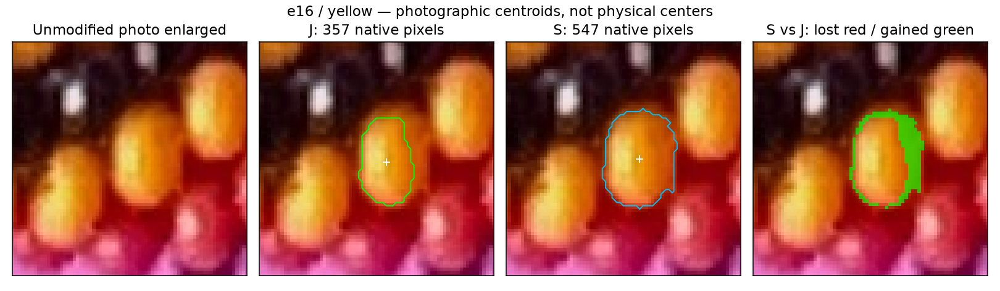
Maximum potential-improvement diagnostic with ≥35px separation and at most3 per old crop; color=None; score=0.117233; strong-source stratum=True. Difference is not established regression.
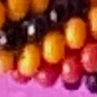
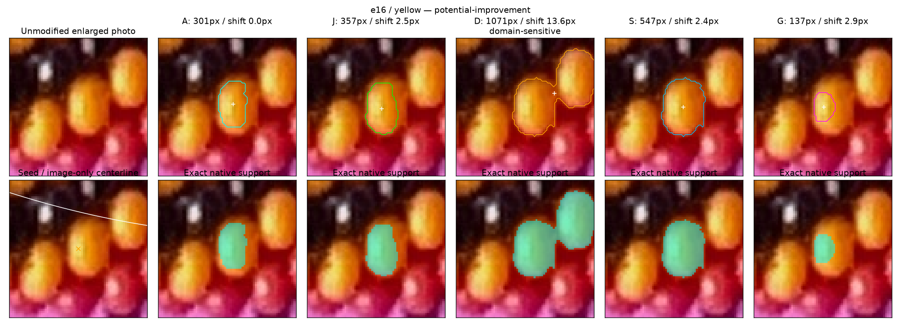
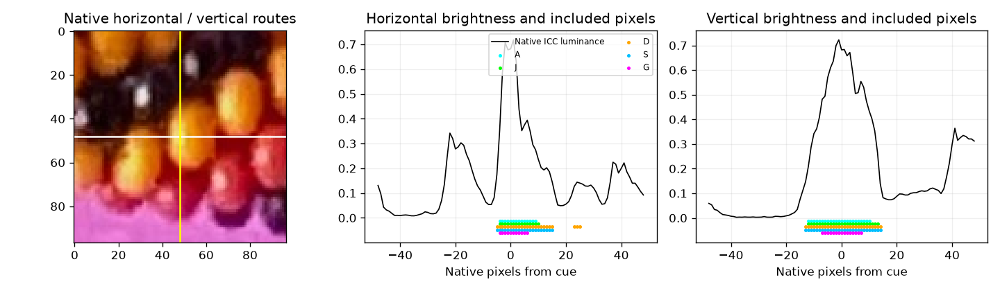
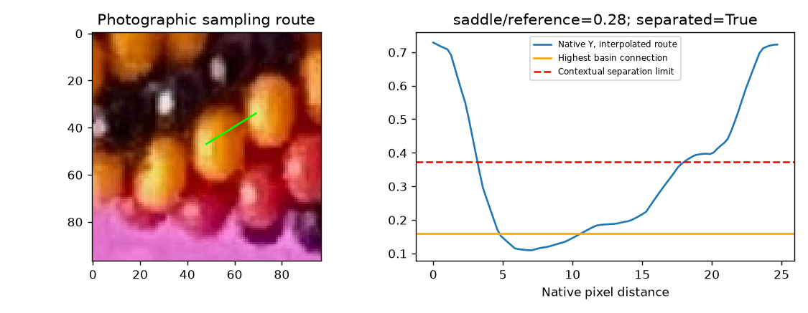
| Method | Area px | Change vs A | Centroid shift px | Boundary gradient | Support / line | 32/48 IoU |
|---|---|---|---|---|---|---|
| A | 301 | −0 / +0 | 0.00 | 0.0687 | negative; near=True | old fixed domain |
| J | 357 | −17 / +73 | 2.50 | 0.0824 | negative; near=True | old fixed domain |
| D | 1071 | −0 / +770 | 13.61 | 0.0658 | crossing; near=True | 0.9197012138188608 |
| S | 547 | −0 / +246 | 2.41 | 0.0623 | negative; near=True | 1.0 |
| G | 137 | −168 / +4 | 2.88 | 0.0786 | negative; near=False | 1.0 |
Peripheral shadow/background cue. A already measures questionable material; J’s large displacement is not established red-bead regression. Retained for audit, deprioritized under the user’s edge/shadow instruction.
Maximum red-truncation diagnostic with ≥35px separation and at most3 per old crop; color=red; score=412.491; strong-source stratum=False. Difference is not established regression.
| Method | Area px | Change vs A | Centroid shift px | Boundary gradient | Support / line | 32/48 IoU |
|---|---|---|---|---|---|---|
| A | 638 | −0 / +0 | 0.00 | 0.0168 | negative; near=False | old fixed domain |
| J | 218 | −513 / +93 | 12.05 | 0.0181 | negative; near=False | old fixed domain |
| D | 2241 | −187 / +1790 | 13.11 | 0.0219 | crossing; near=True | 0.6528335564480143 |
| S | 1085 | −227 / +674 | 12.47 | 0.0194 | negative; near=True | 0.6392572944297082 |
| G | 36 | −602 / +0 | 2.52 | 0.0094 | negative; near=False | 0.08913649025069638 |
Peripheral shadowed-paper cue misclassified as red. Large connected regions are a material/eligibility failure in both old and new methods. Do not optimize the clear-bead rule to rescue this excluded area.
Maximum oversized diagnostic with ≥35px separation and at most3 per old crop; color=red; score=1330; strong-source stratum=False. Difference is not established regression.
| Method | Area px | Change vs A | Centroid shift px | Boundary gradient | Support / line | 32/48 IoU |
|---|---|---|---|---|---|---|
| A | 704 | −0 / +0 | 0.00 | 0.0033 | negative; near=False | old fixed domain |
| J | 1330 | −92 / +718 | 4.00 | 0.0054 | negative; near=False | old fixed domain |
| D | 3810 | −162 / +3268 | 8.76 | 0.0043 | negative; near=False | 0.6252951981107321 |
| S | 3810 | −162 / +3268 | 8.76 | 0.0043 | negative; near=False | 0.6252951981107321 |
| G | 2796 | −398 / +2490 | 16.84 | 0.0026 | negative; near=False | 0.5525 |
Peripheral edge/shadow case; oversized red proposals follow poorly supported dark material. All numerical failures are retained, but this is not a central J regression.
Maximum oversized diagnostic with ≥35px separation and at most3 per old crop; color=red; score=1307; strong-source stratum=False. Difference is not established regression.
| Method | Area px | Change vs A | Centroid shift px | Boundary gradient | Support / line | 32/48 IoU |
|---|---|---|---|---|---|---|
| A | 805 | −0 / +0 | 0.00 | 0.0014 | negative; near=False | old fixed domain |
| J | 1307 | −145 / +647 | 5.13 | 0.0018 | negative; near=False | old fixed domain |
| D | 3428 | −107 / +2730 | 12.72 | 0.0026 | negative; near=False | 0.5606767794632439 |
| S | 3428 | −107 / +2730 | 12.72 | 0.0026 | negative; near=False | 0.5606767794632439 |
| G | 1972 | −350 / +1517 | 9.12 | 0.0015 | negative; near=False | 0.5927991886409736 |
Peripheral shadow cue with artificial J radius contact. D/S demonstrate that enlarging the window alone does not establish ownership. Domain sensitivity is a warning, not a bead boundary.
Maximum search-clipping diagnostic with ≥35px separation and at most3 per old crop; color=None; score=34; strong-source stratum=False. Difference is not established regression.
| Method | Area px | Change vs A | Centroid shift px | Boundary gradient | Support / line | 32/48 IoU |
|---|---|---|---|---|---|---|
| A | 640 | −0 / +0 | 0.00 | 0.0036 | negative; near=False | old fixed domain |
| J | 1213 | −56 / +629 | 3.82 | 0.0061 | negative; near=False | old fixed domain |
| D | 5583 | −0 / +4943 | 10.40 | 0.0063 | crossing; near=True | 0.5217624932831811 |
| S | 4514 | −0 / +3874 | 16.20 | 0.0028 | negative; near=True | 0.6020276100086281 |
| G | 286 | −354 / +0 | 1.63 | 0.0042 | negative; near=False | 0.1653179190751445 |
Wrong-material/black-reflection interface cue. Large centroid disagreement does not mean the physical bead center moved. Peripheral uncertain observation, not a clear red truncation.
Maximum centroid-movement diagnostic with ≥35px separation and at most3 per old crop; color=None; score=17.0989; strong-source stratum=False. Difference is not established regression.
| Method | Area px | Change vs A | Centroid shift px | Boundary gradient | Support / line | 32/48 IoU |
|---|---|---|---|---|---|---|
| A | 90 | −0 / +0 | 0.00 | 0.0296 | positive; near=False | old fixed domain |
| J | 167 | −64 / +141 | 17.10 | 0.0572 | positive; near=False | old fixed domain |
| D | 633 | −8 / +551 | 6.94 | 0.0370 | positive; near=False | 0.7661927330173776 |
| S | 633 | −8 / +551 | 6.94 | 0.0370 | positive; near=False | 0.7661927330173776 |
| G | 23 | −67 / +0 | 4.98 | 0.0266 | positive; near=False | 1.0 |
Edge/material-interface cue with unreliable old ownership. Both centroid and color assignment are doubtful; retain unresolved, deprioritize this example.
Maximum centroid-movement diagnostic with ≥35px separation and at most3 per old crop; color=None; score=15.5408; strong-source stratum=False. Difference is not established regression.
| Method | Area px | Change vs A | Centroid shift px | Boundary gradient | Support / line | 32/48 IoU |
|---|---|---|---|---|---|---|
| A | 50 | −0 / +0 | 0.00 | 0.0520 | positive; near=False | old fixed domain |
| J | 148 | −38 / +136 | 15.54 | 0.0248 | positive; near=False | old fixed domain |
| D | 343 | −6 / +299 | 24.82 | 0.0369 | positive; near=False | 0.8250728862973761 |
| S | 343 | −6 / +299 | 24.82 | 0.0369 | positive; near=False | 0.8250728862973761 |
| G | 235 | −48 / +233 | 28.06 | 0.0298 | positive; near=False | 0.9063829787234042 |
Unseen clear red: S restores diffuse interior lost by J, with a small shift from A. D crosses to the adjacent red; G concentrates on the highlight.
Frozen SHA256 photograph-only confirmation; >180px from development crops.
| Method | Area px | Change vs A | Centroid shift px | Boundary gradient | Support / line | 32/48 IoU |
|---|---|---|---|---|---|---|
| A | 455 | −0 / +0 | 0.00 | 0.0270 | crossing; near=True | old fixed domain |
| J | 241 | −214 / +0 | 3.21 | 0.0307 | crossing; near=True | old fixed domain |
| D | 1839 | −0 / +1384 | 26.62 | 0.0367 | crossing; near=True | 0.6103260869565217 |
| S | 584 | −0 / +129 | 0.39 | 0.0199 | crossing; near=True | 1.0 |
| G | 206 | −249 / +0 | 3.33 | 0.0372 | crossing; near=True | 1.0 |
Unseen clear red: S restores area lost by J, but pigment/neutral-highlight eligibility produces a left notch and small projections. This is a remaining material-gate defect, not corrected by smoothing the drawing.
Frozen SHA256 photograph-only confirmation; >180px from development crops.
| Method | Area px | Change vs A | Centroid shift px | Boundary gradient | Support / line | 32/48 IoU |
|---|---|---|---|---|---|---|
| A | 397 | −0 / +0 | 0.00 | 0.0215 | crossing; near=True | old fixed domain |
| J | 132 | −265 / +0 | 2.40 | 0.0554 | negative; near=True | old fixed domain |
| D | 1230 | −36 / +869 | 22.12 | 0.0333 | crossing; near=True | 0.5650406504065041 |
| S | 394 | −40 / +37 | 0.47 | 0.0264 | crossing; near=True | 1.0 |
| G | 86 | −311 / +0 | 2.78 | 0.0618 | negative; near=False | 1.0 |
Unseen clear yellow: J is plausible; S adds diffuse rim while stopping before the lower neighbor. D joins the two.
Frozen SHA256 photograph-only confirmation; >180px from development crops.
| Method | Area px | Change vs A | Centroid shift px | Boundary gradient | Support / line | 32/48 IoU |
|---|---|---|---|---|---|---|
| A | 412 | −0 / +0 | 0.00 | 0.0821 | crossing; near=True | old fixed domain |
| J | 440 | −23 / +51 | 0.49 | 0.0888 | crossing; near=True | old fixed domain |
| D | 1087 | −0 / +675 | 13.16 | 0.0781 | crossing; near=True | 0.8859245630174793 |
| S | 554 | −0 / +142 | 0.58 | 0.0795 | crossing; near=True | 1.0 |
| G | 144 | −268 / +0 | 4.51 | 0.0911 | crossing; near=True | 0.9930555555555556 |
Important clear-material failure: S merges several yellow neighbors, exceeds870px and changes with domain size. J isolates the target better. This failure is NOT covered by the edge/shadow exception.
Frozen SHA256 photograph-only confirmation; >180px from development crops.
| Method | Area px | Change vs A | Centroid shift px | Boundary gradient | Support / line | 32/48 IoU |
|---|---|---|---|---|---|---|
| A | 467 | −0 / +0 | 0.00 | 0.0709 | crossing; near=True | old fixed domain |
| J | 511 | −27 / +71 | 1.40 | 0.0788 | crossing; near=True | old fixed domain |
| D | 2633 | −0 / +2166 | 4.96 | 0.0591 | crossing; near=True | 0.6950246866691986 |
| S | 1817 | −0 / +1350 | 18.65 | 0.0679 | crossing; near=True | 0.6130985140341222 |
| G | 157 | −310 / +0 | 4.54 | 0.0706 | positive; near=True | 1.0 |
Unresolved red confirmation: S separates a red neighbor but follows a yellow rim and black reflection at its margins. J is more confined. Material ownership remains inadequate; preserve failure.
Frozen SHA256 photograph-only confirmation; >180px from development crops.
| Method | Area px | Change vs A | Centroid shift px | Boundary gradient | Support / line | 32/48 IoU |
|---|---|---|---|---|---|---|
| A | 660 | −0 / +0 | 0.00 | 0.0104 | crossing; near=True | old fixed domain |
| J | 350 | −314 / +4 | 3.87 | 0.0205 | crossing; near=True | old fixed domain |
| D | 2221 | −21 / +1582 | 19.54 | 0.0269 | crossing; near=True | 0.6516651665166516 |
| S | 717 | −175 / +232 | 4.41 | 0.0227 | crossing; near=True | 0.9763231197771588 |
| G | 123 | −537 / +0 | 1.67 | 0.0226 | crossing; near=True | 1.0 |
Unresolved yellow: S still includes the lateral same-color feature, while separating the lower one. J is more confined. A stable domain alone does not establish correct ownership.
Frozen SHA256 photograph-only confirmation; >180px from development crops.
| Method | Area px | Change vs A | Centroid shift px | Boundary gradient | Support / line | 32/48 IoU |
|---|---|---|---|---|---|---|
| A | 421 | −0 / +0 | 0.00 | 0.0545 | crossing; near=True | old fixed domain |
| J | 410 | −24 / +13 | 0.37 | 0.0624 | crossing; near=True | old fixed domain |
| D | 1416 | −0 / +995 | 14.08 | 0.0524 | crossing; near=True | 0.8001412429378532 |
| S | 773 | −2 / +354 | 6.12 | 0.0422 | crossing; near=True | 0.9676584734799483 |
| G | 136 | −285 / +0 | 3.30 | 0.0537 | positive; near=True | 1.0 |
Fresh image-only red cue: S expands real red but retains a dark lower tendril. J is the more conservative interior. New cue does not establish a newly discovered physical bead.
Frozen SHA256 photograph-only confirmation; >180px from development crops.
| Method | Area px | Change vs A | Centroid shift px | Boundary gradient | Support / line | 32/48 IoU |
|---|---|---|---|---|---|---|
| A | 323 | −0 / +0 | 0.00 | 0.0582 | positive; near=False | old fixed domain |
| J | 318 | −46 / +41 | 2.42 | 0.0454 | positive; near=False | old fixed domain |
| D | 2371 | −0 / +2048 | 12.66 | 0.0357 | crossing; near=True | 0.6242091944327288 |
| S | 527 | −21 / +225 | 5.02 | 0.0305 | crossing; near=True | 0.9981024667931688 |
| G | 219 | −118 / +14 | 3.76 | 0.0529 | positive; near=False | 0.9954337899543378 |
Fresh yellow cue: J includes a lower-neighbor contribution; S separates it and retains the broad target. G almost vanishes. Candidate supports cross the image centerline, but completeness is unproven.
Frozen SHA256 photograph-only confirmation; >180px from development crops.
| Method | Area px | Change vs A | Centroid shift px | Boundary gradient | Support / line | 32/48 IoU |
|---|---|---|---|---|---|---|
| A | 363 | −0 / +0 | 0.00 | 0.0310 | positive; near=False | old fixed domain |
| J | 736 | −11 / +384 | 4.68 | 0.0328 | positive; near=True | old fixed domain |
| D | 2755 | −4 / +2396 | 15.24 | 0.0298 | crossing; near=True | 0.5629764065335753 |
| S | 716 | −4 / +357 | 6.66 | 0.0329 | positive; near=True | 1.0 |
| G | 12 | −351 / +0 | 1.59 | 0.0164 | positive; near=False | 0.9230769230769231 |
All are reflection regions only. Lower secondary remains measured; physical ownership stays unknown. Smoothness alone never sets reliability.
Red neighboring comparison to the reviewed upper black reflection. Colored supports remain separate from reflection measurements; no physical ownership is inferred from proximity.
User-reviewed neighboring comparison; evaluation only.
| Method | Area px | Change vs A | Centroid shift px | Boundary gradient | Support / line | 32/48 IoU |
|---|---|---|---|---|---|---|
| A | 435 | −0 / +0 | 0.00 | 0.0350 | crossing; near=True | old fixed domain |
| J | 228 | −208 / +1 | 3.45 | 0.0417 | crossing; near=True | old fixed domain |
| D | 2704 | −4 / +2273 | 9.04 | 0.0273 | crossing; near=True | 0.6216715976331361 |
| S | 650 | −4 / +219 | 1.67 | 0.0196 | crossing; near=True | 1.0 |
| G | 119 | −316 / +0 | 4.37 | 0.0530 | crossing; near=True | 1.0 |
Native reflection supports, contours and stability · Independent rendered confirmation · Bright-neck / dark-seam / ambiguous texture controls
Stop for method review. No global Phase2 fitting or Phase3 search.